- HOME
- 研修プログラム
宝歯会の教育
研修プログラムTraining
医療法人宝歯会では、高度歯科医療を提供するための知識・技術の習得はもちろん、医療従事者として、一社会人として備えておくべき礼儀・礼節、考え方などの教育にも力をいれています。こちらでは、当法人の教育研修プログラムや臨床研修指導医をご紹介します。
宝歯会が考える研修・教育・講習
当法人では、日々進化する歯科医療技術に対し、技術の向上と知識の習得は必須であると考えます。そのため、法人内での定期的な内部研修や外部講師による学術講演会を実施し、外部セミナーへの参加も奨励しております。また本院・分院を問わず全てのスタッフが同じ治療計画の下、 高度な医療技術の提供と向上を目指しています。
また、歯科医療に従事する医療人である前に、社会人としての自覚と責任を持つこと。すなわち「医療人たる前に社会人たれ」を、当法人で勤務するすべてのスタッフに求めています。そして、それを具体化するために理念・院訓を掲げ、研修部を設けて新入研修や学術講習・接遇セミナー、外部講演会への参加を奨励しています。
-
ライター制度
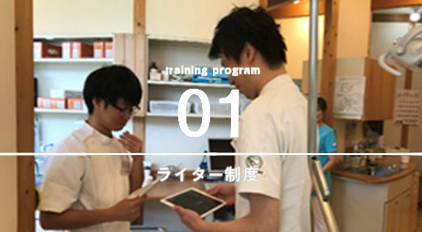
宝歯会では当初１年間 精神面でのアドバイスや同じ気持ちを持てるまた１年後の目標になるよう同じ年代の先輩がサポートします。技術面での指導は院長やベテランドクターがおこないます。
わからないことを持ち帰る事がないよう気軽に相談、フィードバックできる環境を作ります。安心して日々の診療に臨んでいただけます。 -
入社研修
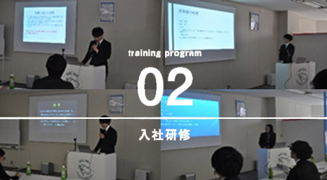
年目の先生には同期入社と２名から３名の分院長と参加する合計２回症例発表会があります。
計画的に毎月の課題に取り組んで頂き発表して頂きます。その成果として発表しインプットだけではなくアウトプットできるＤｒ．の基礎を目指します。ライターの先輩ドクター、院長がしっかりフォローしますので安心して取り組んで下さい。 -
分院長講義
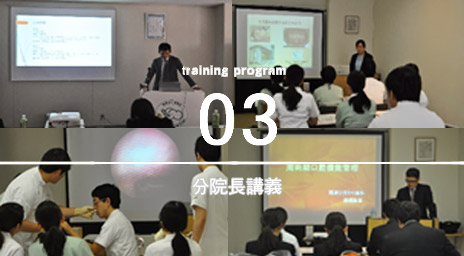
全19医院の分院長が年に一回以上それぞれのテーマで講義を行います。これは宝歯会のやり方を講義、実習としてレクチャーする制度です。
１年目のドクターには歯科医療レベル向上のため参加して頂きます。 -
各種セミナー
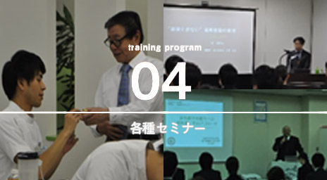
各分野の著名な先生をお招きし学術、実習付セミナーを開催しております。
開業医の先生には臨床的な事、大学教員の先生からは理論的な事を学んでいただきます。繰り返し学ぶ事が重要と考えています。法人の負担で無料で御参加頂けます。
御参加できない場合は動画でも視聴できます。
宝歯会の外部セミナー
外部セミナー
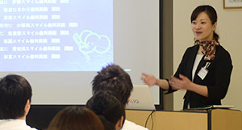
九州歯科大学・九州大学の教授、著名な開業医の先生などに講義を依頼しています。また、全ての担当歯科医師が、最先端のインプラント治療を提供できる歯科医師となることを目標に、法人として「POIインプラントセミナー※」の受講を推奨しています。
※インプラント治療の第一人者である糸瀬正通先生、山道信之先生がコーディネートする、インプラントの教育コースの名称。
臨床研修
歯科医師臨床研修施設
当法人は、8大学の臨床研修施設として認定されています。臨床研修では、歯科医療が好きになるためにはどうしたらよいか、患者様とどのようにしたら永くお付き合いできるのか、といったことを習得でき、さらに歯科医療に必要な基本知識・技術・診療態度の習得も目指します。また、医療人としてだけでなく、社会人として一般企業に就職しても充分通用するような接遇やコミュニケーション能力、社会力の育成も目指しています。
臨床研修プログラム
1.社会人として大切な一般常識やマナー
2.基礎研修 - 基礎資料の採得（レントゲン）、材料学の確認
3.学術研修 - 保存修復、義歯作製までと咬合調整、訪問歯科診療における嚥下訓練など
4.理事長によるインプラント研修
5.訪問歯科診療 -口腔ケア、口腔リハビリテーション、摂食嚥下に関する内視鏡を使った研修
6.歯科技工研修 - 技工物（コア・クラウン・インレー・ブリッジ・義歯）の作製実習
7.外部研修 - 一般のスタッフと一緒に外部セミナーを受講していただきます。
臨床研修指導医
-
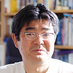
梶原浩喜（かじわら ひろき）
- 歯学博士
- 厚生労働省認定 臨床研修指導医
- 国際インプラント学会（ICOI)認定医
- 近未来オステオインプラント学会（IPOI）専門医
- 特定非営利活動法人日本臨床歯周病学会インプラント認定医
- 特定非営利活動法人日本顎咬合学会
-
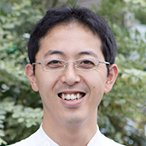
春名正敬（はるな まさたか）
- 日本摂食嚥下リハビリテーション学会
- 近未来オステオインプラント学会（IPOI）
- 訪問部長
-
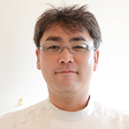
中野吉敏（なかの よしとし）
- 近未来オステオインプラント学会（IPOI）
- 苅田スマイル歯科医院院長
-
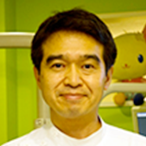
福田 匡輔（ふくだ きょうすけ）
- 歯学博士
- 日本歯科審美学会
- 近未来オステオインプラント学会（IPOI）
- 古賀スマイル歯科医院院長
-
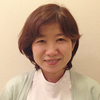
日高純子（ひだか じゅんこ）
- 日本矯正歯科学会 認定医
- 近未来オステオインプラント学会（IPOI）
-
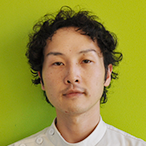
古賀崇矩（こが たかのり）
- 近未来オステオインプラント学会（IPOI）
- あやらぎスマイル歯科医院院長
-
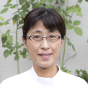
西本満利子
- 近未来オステオインプラント学会（IPOI）